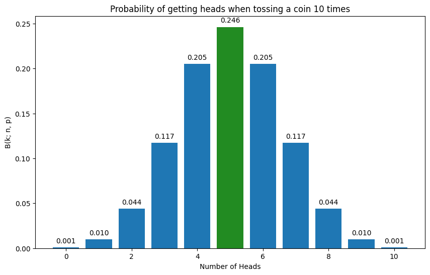
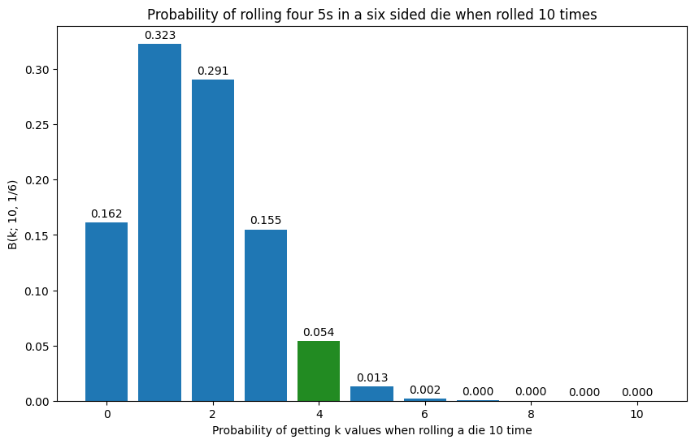
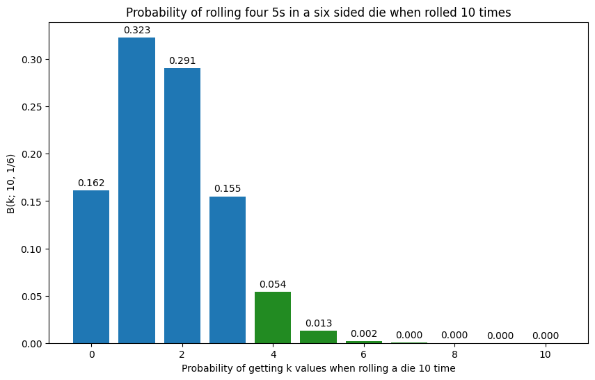

from scipy.stats import binom
binom.pmf(5,10,1/2)np.float64(0.24609375)
Probability distributions describe the likelihood of different outcomes for a random event.
Here are a few ways to think about it:
A Probability Mass Function (PMF) is a function that provides the probability that a discrete random variable is exactly equal to a specific value.
PMFs are useful when dealing with sample spaces composed of distinct, countable outcomes. For instance, a PMF can describe the probability of getting heads or tails in a coin flip, or the probability of rolling any specific face on a six-sided die.
Let’s see some commonly used distributions that use PMFs:
The Bernoulli distribution is a discrete probability distribution that models a single trial of an experiment with precisely two possible outcomes: success or failure. It’s useful for situations where an event either happens or does not.
We can try understanding it using a coin flip:
If p represents the probability of getting heads (success), then:
Combining these, the Probability Mass Function (PMF) for the Bernoulli distribution is given by: \[P(k|p) = p^k *(1-p)^{1-k}\] Where
This equation is also referred to as the likelihood function.
Note: A Bernoulli distribution is a special case of the binomial distribution where the number of trials n=1 (this will make sense in the next section)
Remember those questions we would get asked in school on what is the probability of getting exactly 5 heads in 10 coin tosses etc? Well it’s time to solve them!
Enter Binomial Distributions!
The Binomial distribution is a discrete probability distribution that calculates the probability of obtaining a certain number of successful outcomes (k) in a fixed number of independent trials (n), given a constant probability of success (p) for each trial.
It displays all possible outcomes of k successes, within n trials with p probability. (If this sounds confusing, don’t fret the example below should clear it up)
“Bi” in binomial refers to the two possible outcomes that we are concerned with: an event happening (success) or an event not happening (failure).
All binomial distributions contain three parameters:
The Binomial Probability Mass Function (PMF) is given by:
\[B(k;n,p) =\binom{n}{k} *p^k *(1-p)^{n-k} \] \[where \binom{n}{k} = \frac{n!}{k! (n-k)!}\]
Let’s break this equation down:
We typically describe a Binomial process using the notation:
\(Y \sim \text{Binomial}(n, p)\)
where \(\sim\) stands for “is distributed as”
Using the above equation we can solve for any probabilities that have just 2 outcomes.
For eg: what is the probability of getting 5 heads in 10 coin tosses?
\(B(5;10,1/2) =\binom{10}{5} *(1/2)^5 *(1/2)^{10-5}\)
How does the above equation look in code?
The binom.pmf( ) function gives us the probability of seeing 5 heads in 10 coin tosses.
from scipy.stats import binom
binom.pmf(5,10,1/2)np.float64(0.24609375)This is a great question! Afterall, if the probability of heads is 50% and I toss a coin 10 times, then the probability of getting 5 heads should be 50% right?
What you are thinking of is the expected value or the average result over many trials, but not the probability of a specific outcome.
When you put this together you get 24.6%
Remember at the start of this chapter I had said, probability distributions offer a visual representation of all possible events and the probability of each occurring.
So how would we visualize this?
The above equation now allows us to calculate the probability for any k successes using a fixed n and p.
import matplotlib.pyplot as plt
import numpy as np
from scipy.stats import binom
# Parameters for the binomial distribution
n = 10 # Number of trials (coin tosses)
p = 0.5 # Probability of success (getting heads)
# Generate the x-axis values (number of heads)
x = np.arange(0, n + 1)
# Calculate the probabilities for each number of heads
probs = binom.pmf(x, n, p)
# Create the plot with a larger size
plt.figure(figsize=(10, 6)) # Adjust the width and height as needed
# Create a list of colors, highlighting the bar at x=5
colors = ['tab:blue'] * len(x)
colors[5] = 'forestgreen' # Set the color for x=5 to green
plt.bar(x, probs, color=colors)
# Add labels and title
plt.xlabel("Number of Heads")
plt.ylabel("B(k; n, p)")
plt.title("Probability of getting heads when tossing a coin 10 times")
# Add data labels on top of the bars
for i, prob in enumerate(probs):
plt.text(x[i], prob + 0.005, f'{prob:.3f}', ha='center') # Add text slightly above the bar
# Display the plot
plt.show()
The above chart shows all possible events and the probability of each occurring when flipping a coin 10 times.
Okay let’s look at another example using a fair sided die.
Q2) What is the probability of getting four 5s when rolling a die 10 times
from scipy.stats import binom
binom.pmf(4,10,1/6)np.float64(0.054265875850988195)import matplotlib.pyplot as plt
import numpy as np
from scipy.stats import binom
# Parameters for the binomial distribution
n = 10 # Number of trials
p = 1/6 # Probability of success
# Generate the x-axis values
x = np.arange(0, n + 1)
# Calculate the probabilities for each number of rolls
probs = binom.pmf(x, n, p)
# Create the plot with a larger size
plt.figure(figsize=(10, 6)) # Adjust the width and height as needed
# Create a list of colors, highlighting the bar at x=4
colors = ['tab:blue'] * len(x)
colors[4] = 'forestgreen' # Set the color for x=4 to green
plt.bar(x, probs, color=colors)
# Add labels and title
plt.xlabel("Probability of getting k values when rolling a die 10 time")
plt.ylabel("B(k; 10, 1/6)")
plt.title("Probability of rolling four 5s in a six sided die when rolled 10 times")
# Add data labels on top of the bars
for i, prob in enumerate(probs):
plt.text(x[i], prob + 0.005, f'{prob:.3f}', ha='center') # Add text slightly above the bar
# Display the plot
plt.show()
If you are also asked the probability of getting at least four 5s when rolling a six sided die 10 times, you just have to add the bars of 4,5,6.
What would that look like?
import matplotlib.pyplot as plt
import numpy as np
from scipy.stats import binom
# Parameters for the binomial distribution
n = 10 # Number of trials
p = 1/6 # Probability of success
# Generate the x-axis values
x = np.arange(0, n + 1)
# Calculate the probabilities for each number of rolls
probs = binom.pmf(x, n, p)
# Create the plot with a larger size
plt.figure(figsize=(10, 6)) # Adjust the width and height as needed
# Create a list of colors, highlighting the bar at x=4
colors = ['tab:blue'] * len(x)
colors[4] = 'forestgreen' # Set the color for x=4 to green
colors[5] = 'forestgreen' # Set the color for x=5 to green
colors[6] = 'forestgreen' # Set the color for x=6 to green
colors[7] = 'forestgreen' # Set the color for x=7 to green
plt.bar(x, probs, color=colors)
# Add labels and title
plt.xlabel("Probability of getting k values when rolling a die 10 time")
plt.ylabel("B(k; 10, 1/6)")
plt.title("Probability of rolling four 5s in a six sided die when rolled 10 times")
# Add data labels on top of the bars
for i, prob in enumerate(probs):
plt.text(x[i], prob + 0.005, f'{prob:.3f}', ha='center') # Add text slightly above the bar
# Display the plot
plt.show()
from scipy.stats import binom
n = 10
p = 1/6
# Calculate the probability using the survival function (1 - cdf)
result = 1 - binom.cdf(3, n, p)
resultnp.float64(0.06972784255448872)Translation: There’s a 7% chance that you will see that specific number show up 4 or more times in 10 throws.
Now you may be wondering, oh coin flips and rolling a die are fine, but…
Let’s look at few other examples that might be helpful
Example 1: e-commerce business
An e-commerce website has a 2% conversion rate. If they have 500 visitors in a day, what is the probability that exactly 10 visitors make a purchase?
from scipy.stats import binom
n = 500 # Total number of visitors (trials)
p = 0.02 # Probability of a single visitor making a purchase (conversion rate)
k = 10 # Number of purchases we are interested in (number of successes)
# We want the probability of getting exactly 10 purchases, which is P(X = 10).
result_ecommerce = binom.pmf(k, n, p)
print(f"""Example 1 (E-commerce): The probability of exactly {k} purchases out of
{n} visitors with a conversion rate of {p*100}% is: {result_ecommerce}""")Example 1 (E-commerce): The probability of exactly 10 purchases out of
500 visitors with a conversion rate of 2.0% is: 0.12637979106893046Example 2: Stock market
You pick 20 stocks, and there is a 5% chance that any single stock will be a “10x bagger”. What is the probability of picking exactly 3 “10x baggers” out of the 20 stocks?
from scipy.stats import binom
n = 20 # Number of stocks picked (trials)
p = 0.05 # Probability of a single stock being a "10x bagger" (probability of success)
k = 3 # Number of "10x baggers" we are interested in (number of successes)
# We want the probability of getting exactly 3 "10x baggers", which is P(X = 3).
result_stocks = binom.pmf(k, n, p)
print(f"""Example 2 (Stock Market): The probability of picking exactly {k} '10x
baggers' out of {n} stocks with a {p*100}% chance for each is: {result_stocks}""")Example 2 (Stock Market): The probability of picking exactly 3 '10x
baggers' out of 20 stocks with a 5.0% chance for each is: 0.059582147768732795Example 3: Exam
You are taking a multiple-choice test with 15 questions, and each question has 4 possible answers. You didn’t study and decided to guess randomly on every question. What is the probability that you get at least 8 questions correct?
# Parameters for the binomial distribution
n = 15 # Number of trials (questions)
p = 1/4 # Probability of success (guessing correctly)
# We want the probability of getting at least 8 questions correct, which is P(X >= 8).
# This is equal to 1 - P(X <= 7).
probability_scenario1 = 1 - binom.cdf(7, n, p)
print(f"""The probability of getting at least 8 questions correct when guessing on
15 questions with 4 options each is: {probability_scenario1}""")The probability of getting at least 8 questions correct when guessing on
15 questions with 4 options each is: 0.017299838364124298Q3.1) Suppose you quickly read through some of the material before the test, and your probability of answering each question correctly increases to 1/3. Does this increase make you twice as likely to get at least 8 questions correct compared to guessing randomly on all 15 questions?
from scipy.stats import binom
# Parameters for the second scenario (improved guessing probability)
n_scenario2 = 15 # Number of questions (trials) remains the same
p_scenario2 = 1/3 # New probability of guessing a question correctly
# We want the probability of getting at least 8 questions correct, which is P(X >= 8).
# This is equal to 1 - P(X < 8) = 1 - P(X <= 7).
# So, we calculate the CDF at k=7 and subtract it from 1.
probability_scenario2 = 1 - binom.cdf(7, n_scenario2, p_scenario2)
print(f"""The probability of getting at least 8 out of {n_scenario2} questions correct
with a {round(p_scenario2*100, 2)}% chance per question is: {probability_scenario2}""")
# Compare the probabilities
if probability_scenario2 >= 2 * probability_scenario1:
print(f"""You are at least twice as likely to get at least 8 questions correct
in the second scenario.""")
else:
print(f"""You are not twice as likely to get at least 8 questions correct in \n
the second scenario.""")The probability of getting at least 8 out of 15 questions correct
with a 33.33% chance per question is: 0.08823159840676364
You are at least twice as likely to get at least 8 questions correct
in the second scenario.Okay time to take a break! We’ll look at Beta distributions next!